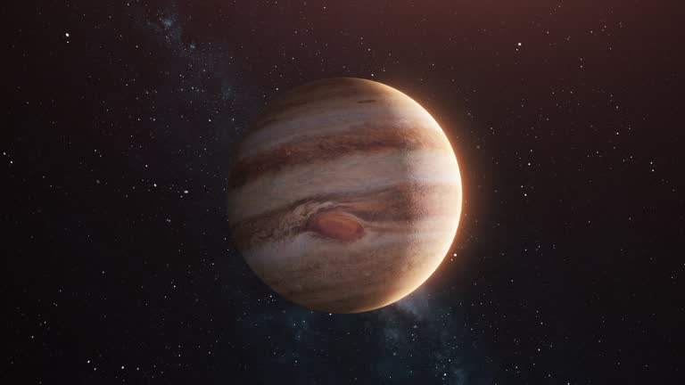

Neptunian Planets
Discover the mysterious ice giants of our universe
What are Neptunian Planets?
Neptunian planets, also known as ice giants, are a type of exoplanet that are similar in size to Neptune and Uranus in our solar system. They have thick atmospheres composed mainly of hydrogen, helium, and methane, and possess rocky cores.

Neptune
Neptune is the eighth planet from the Sun and is known for its deep blue color and strong winds.

Uranus
Uranus is the seventh planet from the Sun and has a unique sideways rotation. It is known for its pale blue color.